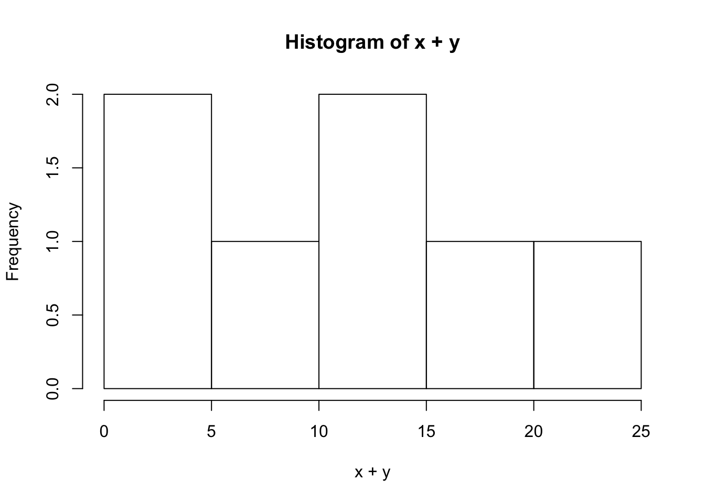
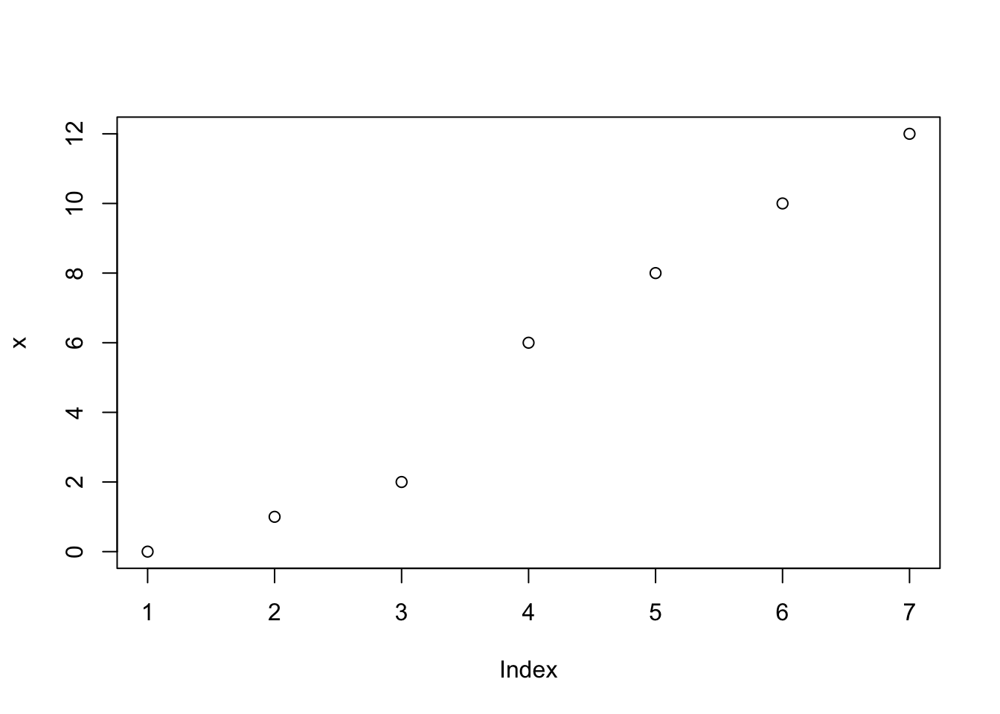

R Functions HW Assignment.
help(topic) This function operates in R to provide information on accessing multiple operators via the internet EG:
help(lm)?topic
ls() return a vector of character strings giving the names of the objects in the specified environment EG:
Ob <- 1
ls(pattern = "O")## [1] "Ob" "Odd_numbers"ls(pattern= "O", all.names = TRUE) ## [1] "Ob" "Odd_numbers"myfunc <- function() {ls()}
myfunc()## character(0)myfunc <- function() {y <- 1; ls()}
myfunc() ## [1] "y"lists all the files in a directory.
dir(path = ".")## [1] "_site.yml" "docs"
## [3] "images" "index.html"
## [5] "index.Rmd" "LabJournalWebsite.Rproj"
## [7] "Links.html" "Links.Rmd"
## [9] "RBasics_cache" "RBasics.html"
## [11] "RBasics.Rmd" "README.html"
## [13] "README.md" "RFunctions_cache"
## [15] "RFunctions.Rmd" "site_libs"list.files() produces a character vector of the names of files or directories in the named directory.
#list.files()save() save writes an external representation of R objects to the specified file.
#save("1 2 3 4 2 42 13", list = character())
#file = stop ("'file' specified")
#ascii = FALSE version = NULL, envir = parent.frame(),
# compress = isTRUE(!ascii), compression_level,
# eval.promises = TRUE, precheck = TRUE)
#save.image(file = ".RData", version = NULL, ascii #= FALSE,
# compress = !ascii, safe = TRUE)load() Reload datasets written with the function save.
#load(file, envir = parent.frame(), verbose = FALSE)#data() Loads specified data sets, or list the available data sets.
library() library and require load and attach add-on packages.
read.table() Reads a file in table format and creates a data frame from it, with cases corresponding to lines and variables to fields in the fil
read.csv() Reads a file in table format and creates a data frame from it, with cases corresponding to lines and variables to fields in the file.
scan() Read data into a vector or list from the console or file.
print() print prints its argument and returns it invisibly (via invisible(x)). It is a generic function which means that new printing methods can be easily added for new classes.
cat() Outputs the objects, concatenating the representations. cat performs much less conversion than print.
write.table() write.table prints its required argument x (after converting it to a data frame if it is not one nor a matrix) to a file or connection.
c() This is a generic function which combines its arguments.
Count1 <-c(1,3,9,-22,22,6,7,10,15,4,25)
length(Count1)## [1] 11seq() Generate regular sequences. seq is a standard generic with a default method
Numbers_List <-seq(1:100)
for (i in 1:length(Numbers_List)){
print(Numbers_List[[i]])
}## [1] 1
## [1] 2
## [1] 3
## [1] 4
## [1] 5
## [1] 6
## [1] 7
## [1] 8
## [1] 9
## [1] 10
## [1] 11
## [1] 12
## [1] 13
## [1] 14
## [1] 15
## [1] 16
## [1] 17
## [1] 18
## [1] 19
## [1] 20
## [1] 21
## [1] 22
## [1] 23
## [1] 24
## [1] 25
## [1] 26
## [1] 27
## [1] 28
## [1] 29
## [1] 30
## [1] 31
## [1] 32
## [1] 33
## [1] 34
## [1] 35
## [1] 36
## [1] 37
## [1] 38
## [1] 39
## [1] 40
## [1] 41
## [1] 42
## [1] 43
## [1] 44
## [1] 45
## [1] 46
## [1] 47
## [1] 48
## [1] 49
## [1] 50
## [1] 51
## [1] 52
## [1] 53
## [1] 54
## [1] 55
## [1] 56
## [1] 57
## [1] 58
## [1] 59
## [1] 60
## [1] 61
## [1] 62
## [1] 63
## [1] 64
## [1] 65
## [1] 66
## [1] 67
## [1] 68
## [1] 69
## [1] 70
## [1] 71
## [1] 72
## [1] 73
## [1] 74
## [1] 75
## [1] 76
## [1] 77
## [1] 78
## [1] 79
## [1] 80
## [1] 81
## [1] 82
## [1] 83
## [1] 84
## [1] 85
## [1] 86
## [1] 87
## [1] 88
## [1] 89
## [1] 90
## [1] 91
## [1] 92
## [1] 93
## [1] 94
## [1] 95
## [1] 96
## [1] 97
## [1] 98
## [1] 99
## [1] 100rep() rep replicates the values in x. It is a generic function, and the (internal) default method is described here.
Numbers_List <-rep(1:10,4)
print(Numbers_List)## [1] 1 2 3 4 5 6 7 8 9 10 1 2 3 4 5 6 7 8 9 10 1 2 3
## [24] 4 5 6 7 8 9 10 1 2 3 4 5 6 7 8 9 10data.frame() The function data.frame() creates data frames, tightly coupled collections of variables which share many of the properties of matrices and of lists, used as the fundamental data structure by most of R’s modeling software
V<-LETTERS[1:3]
test<-sample(V,20,replace = TRUE)
(a <- data.frame(x = 1, y = 1:20, test = test))## x y test
## 1 1 1 A
## 2 1 2 B
## 3 1 3 A
## 4 1 4 C
## 5 1 5 A
## 6 1 6 A
## 7 1 7 B
## 8 1 8 B
## 9 1 9 C
## 10 1 10 A
## 11 1 11 C
## 12 1 12 A
## 13 1 13 C
## 14 1 14 B
## 15 1 15 B
## 16 1 16 C
## 17 1 17 B
## 18 1 18 C
## 19 1 19 B
## 20 1 20 Cdata.frame(1, 1:30, sample(V, 10, replace = TRUE))## X1 X1.30 sample.V..10..replace...TRUE.
## 1 1 1 C
## 2 1 2 B
## 3 1 3 B
## 4 1 4 B
## 5 1 5 A
## 6 1 6 B
## 7 1 7 A
## 8 1 8 C
## 9 1 9 A
## 10 1 10 C
## 11 1 11 C
## 12 1 12 B
## 13 1 13 B
## 14 1 14 B
## 15 1 15 A
## 16 1 16 B
## 17 1 17 A
## 18 1 18 C
## 19 1 19 A
## 20 1 20 C
## 21 1 21 C
## 22 1 22 B
## 23 1 23 B
## 24 1 24 B
## 25 1 25 A
## 26 1 26 B
## 27 1 27 A
## 28 1 28 C
## 29 1 29 A
## 30 1 30 Cis.data.frame(a)## [1] TRUElist()ask Functions to construct, coerce and check for both kinds of R lists.
matrix() matrix creates a matrix from the given set of values.
M <- matrix(c(3:14), nrow = 4, byrow = TRUE)
print(M)## [,1] [,2] [,3]
## [1,] 3 4 5
## [2,] 6 7 8
## [3,] 9 10 11
## [4,] 12 13 14factor()ask The function factor is used to encode a vector as a factor (the terms ‘category’ and ‘enumerated type’ are also used for factors). If argument ordered is TRUE, the factor levels are assumed to be ordered. For compatibility with S there is also a function ordered.
factor(34455342)## [1] 34455342
## Levels: 34455342rbind() Take a sequence of vector, matrix or data-frame arguments and combine by columns or rows, respectively. These are generic functions with methods for other R classes.
x1 <- c(7, 4, 4, 9)
x2 <- c(5, 2, 8, 9)
x3 <- c(1, 2, 3, 4)
data_1 <- data.frame(x1, x2, x3)
vector_1 <- c(9, 8, 7)
rbind(data_1, vector_1)## x1 x2 x3
## 1 7 5 1
## 2 4 2 2
## 3 4 8 3
## 4 9 9 4
## 5 9 8 7cbind() Take a sequence of vector, matrix or data-frame arguments and combine by columns or rows, respectively. These are generic functions with methods for other R classes.
df1 = data.frame(name = c("Norlander","Annalouise","Marsha","Angelina"), Graduated_projected = c(2020,2020,2020,2020))
df2 = data.frame(Birth_place = c("Trinidad","U.S.A","Haiti","London"), Birth_year = c(1990,1992,1995,1993))
cbinded_df<-cbind(df1,df2)
cbinded_df## name Graduated_projected Birth_place Birth_year
## 1 Norlander 2020 Trinidad 1990
## 2 Annalouise 2020 U.S.A 1992
## 3 Marsha 2020 Haiti 1995
## 4 Angelina 2020 London 1993x[n] nth element
x[-n] all but nth element
x[1:n] first n elements
x[-(1:n)] elements from n+1 to the end
x[c(1,4,2)] specific elements
x[“name”] elements named “name”
x[x>3] all elements greater than 3
x[x > 3 & x < 5] all elements between 3 and 5
x[x %in% c(“a”,“and”,“the”)] all elements in given set
x[n] list with elements n
x[[n]] nt h element of the list
x[[“name”]] element of the list named “name”
x$name id.
x[i,j] element at row i, column j
matrix(1:9, nrow = 3, ncol = 3)## [,1] [,2] [,3]
## [1,] 1 4 7
## [2,] 2 5 8
## [3,] 3 6 9x[i,] row i
x[,j] column j
x[,c(1,3)] columns 1 and 3
x[“name”,] row named “name”
x[[“name”]] column named “name”
x$nameid. he name to use for the column created from the list.
as.data.frame(x) Functions to check if an object is a data frame, or coerce it if possible.
df2 <- as.data.frame(matrix(1:10,3,4,7),1:5)
print(df2)## V1 V2 V3 V4
## 1 1 2 3 4
## 2 5 6 7 8
## 3 9 10 1 2as.numeric(x) Creates or coerces objects of type “numeric”. is.numeric is a more general test of an object being interpretable as numbers.
df1 <- as.numeric(matrix(1:10,3,4,7),1:5)
print(df1)## [1] 1 5 9 2 6 10 3 7 1 4 8 2as.logical(x)ask
as.logical(0:5,1,2,8)## [1] FALSE TRUE TRUE TRUE TRUE TRUEas.character(x)ask Creates or coerces objects of type “numeric”. is.numeric is a more general test of an object being interpretable as numbers.
x = as.character(3.14)
print((x))## [1] "3.14"is.na(x) table uses the cross-classifying factors to build a contingency table of the counts at each combination of factor levels.
x<-c(1,5,6,7,9,NA)
is.na(x)## [1] FALSE FALSE FALSE FALSE FALSE TRUEis.null(x) NULL represents the null object in R: it is a reserved word. NULL is often returned by expressions and functions whose value is undefined.
x<-c(1,4,5,6,9,5,3,5,6,0)
x > 5## [1] FALSE FALSE FALSE TRUE TRUE FALSE FALSE FALSE TRUE FALSEis.null(x)## [1] FALSEis.data.frame(x)ask
is.character(x)ask
length(x) Get or set the length of vectors (including lists) and factors, and of any other R object for which a method has been defined.
Count1 <-c(1,3,9,-22,22,6,7,10,15,4,25)
length(Count1)## [1] 11dim(x)ask
dimnames(x)ask
nrow(x) nrow and ncol return the number of rows or columns present in x. NCOL and NROW do the same treating a vector as 1-column matrix, even a 0-length vector, compatibly with as.matrix() or cbind(), see the example
n<- matrix(1:12 )
nrow(n)## [1] 12ncol(x) ncol return the number of rows or columns present in x. NCOL and NROW do the same treating a vector as 1-column matrix, even a 0-length vector, compatibly with as.matrix() or cbind(), see the example
n<- matrix(1:12,5 )
ncol(n)## [1] 3class() R possesses a simple generic function mechanism which can be used for an object-oriented style of programming. Method dispatch takes place based on the class of the first argument to the generic function.
x<-c(1,3, 5, 7, 8, 10)
class(x)## [1] "numeric"a<-c('Norlander, Annalouise, Ana, Marsha')
class(a)## [1] "character"attributes()ask These functions access an object’s attributes. The first form below returns the object’s attribute list. The replacement forms uses the list on the right-hand side of the assignment as the object’s attributes (if appropriate)
attributes(10)## NULLwhich.max() Determines the location, i.e., index of the (first) minimum or maximum of a numeric (or logical) vector.
Y<-c(1,3,9,-22,22,6,7,10,15,4,25,22,56,7,22,22)
table(Y)## Y
## -22 1 3 4 6 7 9 10 15 22 25 56
## 1 1 1 1 1 2 1 1 1 4 1 1C=table(Y)
names(which.max(C))## [1] "22"which.min() Determines the location, i.e., index of the (first) minimum or maximum of a numeric (or logical) vector.
Y<-c(1,3,9,-22,22,6,7,10,15,4,25,22,56,7,22,22)
table(Y)## Y
## -22 1 3 4 6 7 9 10 15 22 25 56
## 1 1 1 1 1 2 1 1 1 4 1 1C=table(Y)
names(which.min(C))## [1] "-22"which()
sort() Sort (or order) a vector or factor (partially) into ascending or descending order. For ordering along more than one variable, e.g., for sorting data frames, see order.
Y<-c(1,3,9,-22,22,6,7,10,15,4,25,22,56,7,22,22)
sort(Y)## [1] -22 1 3 4 6 7 7 9 10 15 22 22 22 22 25 56unique() unique returns a vector, data frame or array like x but with duplicate elements/rows removed.
Y<-c(1:3, 32:23, 8 - 0:5)
unique(Y)## [1] 1 2 3 32 31 30 29 28 27 26 25 24 23 8 7 6 5 4table() table uses the cross-classifying factors to build a contingency table of the counts at each combination of factor levels.
Y<-c(1,3,9,-22,22,6,7,10,15,4,25,22,56,7,22,22)
table(Y)## Y
## -22 1 3 4 6 7 9 10 15 22 25 56
## 1 1 1 1 1 2 1 1 1 4 1 1sample() sample takes a sample of the specified size from the elements of x using either with or without replacement.
x<-c(1:12)
sample(x)
#BOOTHSTRAPING
sample(x, replace = TRUE)max()
Numbers_List <-c(1,10,12,13,15,20,16,3,5,6,79,10)
max(Numbers_List)## [1] 79min()
Numbers_List <-c(1,10,12,13,15,20,16,3,5,6,79,10)
min(Numbers_List)## [1] 1range() range returns a vector containing the minimum and maximum of all the given arguments.
Numbers_List <-c(1,10,12,13,15,20,16,3,5,6,79,10)
range(Numbers_List)## [1] 1 79sum() sum returns the sum of all the values present in its arguments.
Numbers_List <-seq(1:100)
sum(Numbers_List)## [1] 5050mean() Generic function for the (trimmed) arithmetic mean.
Numbers_List <-c(1,10,15,20)
mean(Numbers_List)## [1] 11.5median() Compute the sample median.
Numbers_List <-c(1, 10 ,15 , 20)
median(Numbers_List)## [1] 12.5var() var, cov and cor compute the variance of x and the covariance or correlation of x and y if these are vectors. If x and y are matrices then the covariances (or correlations) between the columns of x and the columns of y are computed.
Numbers_List <-c(1,10,12,13,15,20,16,3,5,6,79,10)
var(Numbers_List)## [1] 427.0606sd() This function computes the standard deviation of the values in x. If na.rm is TRUE then missing values are removed before computation proceeds.
Numbers_List <-c(1,10,12,13,15,20,16,3,5,6,79,10)
sd(Numbers_List)## [1] 20.66544cor()ask
round() ceiling takes a single numeric argument x and returns a numeric vector containing the smallest integers not less than the corresponding elements of x.
x = 12.6
round(x)## [1] 13abs() abs(x) computes the absolute value of x, sqrt(x) computes the (principal) square root of x, √{x}.
x <- c(-2,4,0,45,9,-4)
abs(x)## [1] 2 4 0 45 9 4t()
diag() Extract or replace the diagonal of a matrix, or construct a diagonal matrix.
df2 <-matrix(1:10,3,4,7)
diag(df2)## [1] 1 6 1diag(4, 6, 2, names = TRUE)## [,1] [,2]
## [1,] 4 0
## [2,] 0 4
## [3,] 0 0
## [4,] 0 0
## [5,] 0 0
## [6,] 0 0rowSums() Form row and column sums and means for numeric arrays (or data frames).
df2 <-matrix(1:10,3,4,7)
print(df2)## [,1] [,2] [,3] [,4]
## [1,] 1 2 3 4
## [2,] 5 6 7 8
## [3,] 9 10 1 2rowSums(df2)## [1] 10 26 22colSums() Form row and column sums and means for numeric arrays (or data frames).
df2 <-matrix(1:10,3,4,7)
print(df2)## [,1] [,2] [,3] [,4]
## [1,] 1 2 3 4
## [2,] 5 6 7 8
## [3,] 9 10 1 2colSums(df2)## [1] 15 18 11 14rowMeans() Form row and column sums and means for numeric arrays (or data frames).
df2 <-matrix(1:10,3,4,7)
print(df2)## [,1] [,2] [,3] [,4]
## [1,] 1 2 3 4
## [2,] 5 6 7 8
## [3,] 9 10 1 2rowMeans(df2)## [1] 2.5 6.5 5.5colMeans()
df2 <-matrix(1:10,3,4,7)
print(df2)## [,1] [,2] [,3] [,4]
## [1,] 1 2 3 4
## [2,] 5 6 7 8
## [3,] 9 10 1 2colMeans(df2)## [1] 5.000000 6.000000 3.666667 4.666667apply() Returns a vector or array or list of values obtained by applying a function to margins of an array or matrix.
aggregate() Splits the data into subsets, computes summary statistics for each, and returns the result in a convenient form.
paste() Concatenate vectors after converting to character.
X<-c(1,2,3,4,5,6,7,8,9,10)
x*2## [1] -4 8 0 90 18 -8for(i in 1:10) {
print(paste(X,'x', i, '=', X*i))
}## [1] "1 x 1 = 1" "2 x 1 = 2" "3 x 1 = 3" "4 x 1 = 4" "5 x 1 = 5"
## [6] "6 x 1 = 6" "7 x 1 = 7" "8 x 1 = 8" "9 x 1 = 9" "10 x 1 = 10"
## [1] "1 x 2 = 2" "2 x 2 = 4" "3 x 2 = 6" "4 x 2 = 8" "5 x 2 = 10"
## [6] "6 x 2 = 12" "7 x 2 = 14" "8 x 2 = 16" "9 x 2 = 18" "10 x 2 = 20"
## [1] "1 x 3 = 3" "2 x 3 = 6" "3 x 3 = 9" "4 x 3 = 12" "5 x 3 = 15"
## [6] "6 x 3 = 18" "7 x 3 = 21" "8 x 3 = 24" "9 x 3 = 27" "10 x 3 = 30"
## [1] "1 x 4 = 4" "2 x 4 = 8" "3 x 4 = 12" "4 x 4 = 16" "5 x 4 = 20"
## [6] "6 x 4 = 24" "7 x 4 = 28" "8 x 4 = 32" "9 x 4 = 36" "10 x 4 = 40"
## [1] "1 x 5 = 5" "2 x 5 = 10" "3 x 5 = 15" "4 x 5 = 20" "5 x 5 = 25"
## [6] "6 x 5 = 30" "7 x 5 = 35" "8 x 5 = 40" "9 x 5 = 45" "10 x 5 = 50"
## [1] "1 x 6 = 6" "2 x 6 = 12" "3 x 6 = 18" "4 x 6 = 24" "5 x 6 = 30"
## [6] "6 x 6 = 36" "7 x 6 = 42" "8 x 6 = 48" "9 x 6 = 54" "10 x 6 = 60"
## [1] "1 x 7 = 7" "2 x 7 = 14" "3 x 7 = 21" "4 x 7 = 28" "5 x 7 = 35"
## [6] "6 x 7 = 42" "7 x 7 = 49" "8 x 7 = 56" "9 x 7 = 63" "10 x 7 = 70"
## [1] "1 x 8 = 8" "2 x 8 = 16" "3 x 8 = 24" "4 x 8 = 32" "5 x 8 = 40"
## [6] "6 x 8 = 48" "7 x 8 = 56" "8 x 8 = 64" "9 x 8 = 72" "10 x 8 = 80"
## [1] "1 x 9 = 9" "2 x 9 = 18" "3 x 9 = 27" "4 x 9 = 36" "5 x 9 = 45"
## [6] "6 x 9 = 54" "7 x 9 = 63" "8 x 9 = 72" "9 x 9 = 81" "10 x 9 = 90"
## [1] "1 x 10 = 10" "2 x 10 = 20" "3 x 10 = 30" "4 x 10 = 40"
## [5] "5 x 10 = 50" "6 x 10 = 60" "7 x 10 = 70" "8 x 10 = 80"
## [9] "9 x 10 = 90" "10 x 10 = 100"strsplit() Split the elements of a character vector x into substrings according to the matches to substring split within them.
tolower()
toupper
hist()
x<-c(0, 1, 2, 6, 8, 10, 12)
y<-c(0, 4, 6, 6,7,10, 11)
hist(x+y)
plot()
x<-c(0, 1, 2, 6, 8, 10, 12)
y<-c(0, 4, 6, 6,7,10, 11)
plot(x)
rnorm()
rnorm(10, mean=3, sd= 1)## [1] 2.912369 3.905543 1.778659 2.576976 3.191299 2.047548 3.657657
## [8] 2.138311 4.591735 3.695790runif()
x<-c (1, 3, 5, 7,8)
y<-c(x+2)
print(y)## [1] 3 5 7 9 10runif(x, min = 5 , max = 8)## [1] 7.617811 5.901258 5.960830 7.216942 7.552069show that you can define a function
x_mean <-c(1,3,9,-22,22,6,7,10,15,4,25)
my_fun <-function(x_mean){ sum(x_mean)/length(x_mean)}
print(my_fun(x_mean))## [1] 7.272727show that you can write a for loop
X<-c(1,2,3,4,5,6,7,8,9,10)
x*2## [1] 2 6 10 14 16for(i in 1:10) {
print(paste(X,'x', i, '=', X*i))
}## [1] "1 x 1 = 1" "2 x 1 = 2" "3 x 1 = 3" "4 x 1 = 4" "5 x 1 = 5"
## [6] "6 x 1 = 6" "7 x 1 = 7" "8 x 1 = 8" "9 x 1 = 9" "10 x 1 = 10"
## [1] "1 x 2 = 2" "2 x 2 = 4" "3 x 2 = 6" "4 x 2 = 8" "5 x 2 = 10"
## [6] "6 x 2 = 12" "7 x 2 = 14" "8 x 2 = 16" "9 x 2 = 18" "10 x 2 = 20"
## [1] "1 x 3 = 3" "2 x 3 = 6" "3 x 3 = 9" "4 x 3 = 12" "5 x 3 = 15"
## [6] "6 x 3 = 18" "7 x 3 = 21" "8 x 3 = 24" "9 x 3 = 27" "10 x 3 = 30"
## [1] "1 x 4 = 4" "2 x 4 = 8" "3 x 4 = 12" "4 x 4 = 16" "5 x 4 = 20"
## [6] "6 x 4 = 24" "7 x 4 = 28" "8 x 4 = 32" "9 x 4 = 36" "10 x 4 = 40"
## [1] "1 x 5 = 5" "2 x 5 = 10" "3 x 5 = 15" "4 x 5 = 20" "5 x 5 = 25"
## [6] "6 x 5 = 30" "7 x 5 = 35" "8 x 5 = 40" "9 x 5 = 45" "10 x 5 = 50"
## [1] "1 x 6 = 6" "2 x 6 = 12" "3 x 6 = 18" "4 x 6 = 24" "5 x 6 = 30"
## [6] "6 x 6 = 36" "7 x 6 = 42" "8 x 6 = 48" "9 x 6 = 54" "10 x 6 = 60"
## [1] "1 x 7 = 7" "2 x 7 = 14" "3 x 7 = 21" "4 x 7 = 28" "5 x 7 = 35"
## [6] "6 x 7 = 42" "7 x 7 = 49" "8 x 7 = 56" "9 x 7 = 63" "10 x 7 = 70"
## [1] "1 x 8 = 8" "2 x 8 = 16" "3 x 8 = 24" "4 x 8 = 32" "5 x 8 = 40"
## [6] "6 x 8 = 48" "7 x 8 = 56" "8 x 8 = 64" "9 x 8 = 72" "10 x 8 = 80"
## [1] "1 x 9 = 9" "2 x 9 = 18" "3 x 9 = 27" "4 x 9 = 36" "5 x 9 = 45"
## [6] "6 x 9 = 54" "7 x 9 = 63" "8 x 9 = 72" "9 x 9 = 81" "10 x 9 = 90"
## [1] "1 x 10 = 10" "2 x 10 = 20" "3 x 10 = 30" "4 x 10 = 40"
## [5] "5 x 10 = 50" "6 x 10 = 60" "7 x 10 = 70" "8 x 10 = 80"
## [9] "9 x 10 = 90" "10 x 10 = 100"show that you can write a while loop
show that you can write an if else statement
for (a in 1:100) {
if (a %% 3 == 0) {print("Fizz")}
else if (a %% 5 == 0) {print("Buzz")}
else print(a)
}## [1] 1
## [1] 2
## [1] "Fizz"
## [1] 4
## [1] "Buzz"
## [1] "Fizz"
## [1] 7
## [1] 8
## [1] "Fizz"
## [1] "Buzz"
## [1] 11
## [1] "Fizz"
## [1] 13
## [1] 14
## [1] "Fizz"
## [1] 16
## [1] 17
## [1] "Fizz"
## [1] 19
## [1] "Buzz"
## [1] "Fizz"
## [1] 22
## [1] 23
## [1] "Fizz"
## [1] "Buzz"
## [1] 26
## [1] "Fizz"
## [1] 28
## [1] 29
## [1] "Fizz"
## [1] 31
## [1] 32
## [1] "Fizz"
## [1] 34
## [1] "Buzz"
## [1] "Fizz"
## [1] 37
## [1] 38
## [1] "Fizz"
## [1] "Buzz"
## [1] 41
## [1] "Fizz"
## [1] 43
## [1] 44
## [1] "Fizz"
## [1] 46
## [1] 47
## [1] "Fizz"
## [1] 49
## [1] "Buzz"
## [1] "Fizz"
## [1] 52
## [1] 53
## [1] "Fizz"
## [1] "Buzz"
## [1] 56
## [1] "Fizz"
## [1] 58
## [1] 59
## [1] "Fizz"
## [1] 61
## [1] 62
## [1] "Fizz"
## [1] 64
## [1] "Buzz"
## [1] "Fizz"
## [1] 67
## [1] 68
## [1] "Fizz"
## [1] "Buzz"
## [1] 71
## [1] "Fizz"
## [1] 73
## [1] 74
## [1] "Fizz"
## [1] 76
## [1] 77
## [1] "Fizz"
## [1] 79
## [1] "Buzz"
## [1] "Fizz"
## [1] 82
## [1] 83
## [1] "Fizz"
## [1] "Buzz"
## [1] 86
## [1] "Fizz"
## [1] 88
## [1] 89
## [1] "Fizz"
## [1] 91
## [1] 92
## [1] "Fizz"
## [1] 94
## [1] "Buzz"
## [1] "Fizz"
## [1] 97
## [1] 98
## [1] "Fizz"
## [1] "Buzz"Explain what return() does inside a function, show you can use it These functions provide the base mechanisms for defining new functions in the R language.
for (a in 1:100) {
if (a %% 3 == 0) {print("Fizz")}
else if (a %% 5 == 0) {print("Buzz")}
else print(a)
return
}## [1] 1
## [1] 2
## [1] "Fizz"
## [1] 4
## [1] "Buzz"
## [1] "Fizz"
## [1] 7
## [1] 8
## [1] "Fizz"
## [1] "Buzz"
## [1] 11
## [1] "Fizz"
## [1] 13
## [1] 14
## [1] "Fizz"
## [1] 16
## [1] 17
## [1] "Fizz"
## [1] 19
## [1] "Buzz"
## [1] "Fizz"
## [1] 22
## [1] 23
## [1] "Fizz"
## [1] "Buzz"
## [1] 26
## [1] "Fizz"
## [1] 28
## [1] 29
## [1] "Fizz"
## [1] 31
## [1] 32
## [1] "Fizz"
## [1] 34
## [1] "Buzz"
## [1] "Fizz"
## [1] 37
## [1] 38
## [1] "Fizz"
## [1] "Buzz"
## [1] 41
## [1] "Fizz"
## [1] 43
## [1] 44
## [1] "Fizz"
## [1] 46
## [1] 47
## [1] "Fizz"
## [1] 49
## [1] "Buzz"
## [1] "Fizz"
## [1] 52
## [1] 53
## [1] "Fizz"
## [1] "Buzz"
## [1] 56
## [1] "Fizz"
## [1] 58
## [1] 59
## [1] "Fizz"
## [1] 61
## [1] 62
## [1] "Fizz"
## [1] 64
## [1] "Buzz"
## [1] "Fizz"
## [1] 67
## [1] 68
## [1] "Fizz"
## [1] "Buzz"
## [1] 71
## [1] "Fizz"
## [1] 73
## [1] 74
## [1] "Fizz"
## [1] 76
## [1] 77
## [1] "Fizz"
## [1] 79
## [1] "Buzz"
## [1] "Fizz"
## [1] 82
## [1] 83
## [1] "Fizz"
## [1] "Buzz"
## [1] 86
## [1] "Fizz"
## [1] 88
## [1] 89
## [1] "Fizz"
## [1] 91
## [1] 92
## [1] "Fizz"
## [1] 94
## [1] "Buzz"
## [1] "Fizz"
## [1] 97
## [1] 98
## [1] "Fizz"
## [1] "Buzz"These functions provide the base mechanisms for defining new functions in the R language.
Explain what break() does, show you can use it
Use the packages tab in R-studio to install these packages. You will need to be connected to the internet when you do this. If you are installing on your laptop, or on R-studio Cloud, then these packages will not need to installed again.
ggplot2 dplyr shiny data.table reshape2 stringr